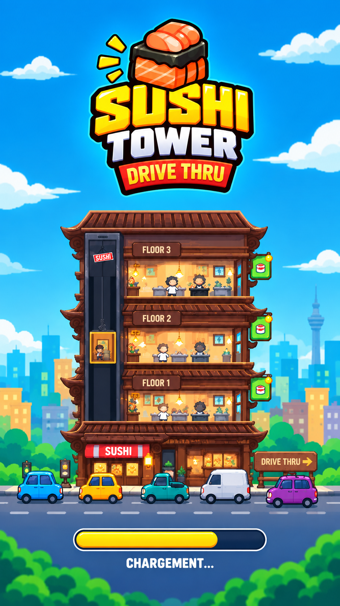

🍣 Sushi Tower
Construisez, automatisez et gérez l'empire de sushi le plus haut du monde ! Vous aimez les jeux de type Idle Tycoon et les clickers addictifs ? Laissez tomber le minage de crypto-monnaies et lancez-vous dans le business le plus rentable et savoureux de la planète : l'empire du sushi vertical !
Dans Sushi Tower, commencez avec un simple comptoir au rez-de-chaussée et bâtissez une tour gigantesque. Générez des milliards de pièces de monnaie en vendant des sushis en continu, même lorsque vous ne jouez pas !
🔄 LA BOUCLE DE GAMEPLAY IDLE PARFAITE :
- Produisez : Chaque étage produit un type de sushi spécifique. Plus l'étage est élevé, plus le sushi a de la valeur !
- L'Ascenseur : Améliorez votre monte-charge logistique pour acheminer rapidement la nourriture vers le bas.
- Vendez via le Drive : Le guichet livre les clients à la chaîne et transforme vos plats en montagnes d'argent.
💼 AUTOMATISEZ ET RECRUTEZ DES MANAGERS
Recrutez des Chefs Managers pour chaque étage. Ils automatiseront la production culinaire pour vous. Votre tour continue de générer du Cash virtuel en arrière-plan pendant que vous dormez ou étudiez !
✨ CARACTÉRISTIQUES DU TYCOON :
- Améliorations : Boostez la vitesse des cuisiniers, l'ascenseur et le rendement du Drive.
- Système prestige : Vendez votre franchise pour débloquer des multiplicateurs dorés permanents.
- Graphismes : Regardez vos petits chefs s'activer dans une interface colorée et dynamique.
📥 Téléchargez Sushi Tower sur Google Play